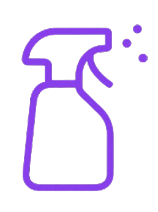

Welcome to Nox
Your all-in-one Windows security toolkit
Version 1.0.0
üõ°Ô∏è Malware Defense
Defend against threats with quick or full system scans.

üßπ System Cleanup
Reclaim space by emptying bins, temp files, and more.
üîó URL Scanner
Check SSL/TLS & DNS to keep every link safe.
üíª System Health
Monitor OS, uptime, CPU & RAM at a glance.
üöÄ Getting Started
- üîÑ Update your definitions in Malware Defense.
- üßπ Run a one-click cleanup to reclaim space.
- üîí Scan URLs before you browse the web.
- üìä Check System Health anytime.
✉️ Need Help?
If you run into any issues or have questions, drop us a line at support.nox@z3r0app.org